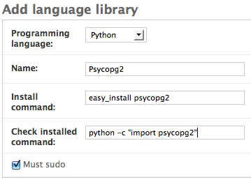

Defining Language Libraries¶
Language libraries are programming code libraries that are installed using a programming language-specific tool and are therefore operating system agnostic. easy_install for python, gem for ruby, cpan for perl, and pear for PHP are all examples of these language-specific tools.
Defining a New Language Library¶
In the admin, click the Add button on the Language Library line.

Select a programming language from the drop down menu.
Enter the name of the library.
Enter the command to install the library.
Enter the command to see if the library is installed.
Uncheck the Must sudo checkbox if the command does not require root privileges for installation.
Click on the Save button.